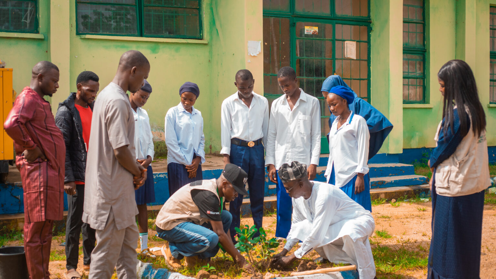
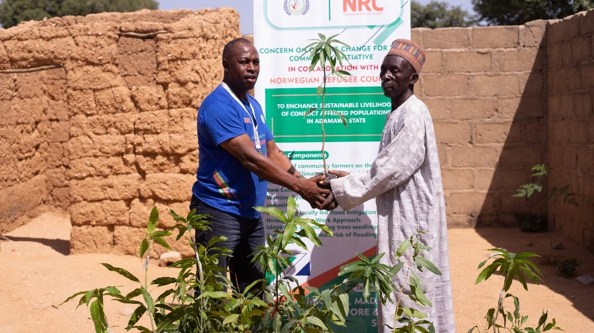

Climate Change Mitigation & Adaptation
Strengthening community resilience through climate-smart practices, awareness campaigns, nature-based solutions, and policies that reduce climate risks.

FOURCi works across key thematic areas that strengthen climate resilience, protect ecosystems, and empower communities with sustainable solutions.
Our focus spans climate-smart agriculture, land restoration, WASH, renewable energy, waste management, and disaster risk reduction. We also prioritise environmental education, advocacy, and inclusive empowerment of women and youth.
Strengthening community resilience through climate-smart practices, awareness campaigns, nature-based solutions, and policies that reduce climate risks.
Empowering farmers with sustainable agricultural techniques, improved seed varieties, soil management, irrigation solutions, and sustainable land-use systems that enhance productivity and food sovereignty.
Promoting clean, affordable, and sustainable energy alternatives such as solar solutions, energy-efficient technologies, and green innovation for homes and communities.
Analysing the disproportionate impacts of climate change on women and marginalised genders, recognising their heightened vulnerability due to systemic inequalities.
Supporting reforestation, land rehabilitation, biodiversity protection, and the restoration of degraded ecosystems to promote a healthier environment.
Improving access to safe water, sanitation facilities, hygiene promotion, and community-led initiatives that prevent waterborne diseases and enhance public health.
Building community capacity to anticipate, prevent, and respond to climate-related disasters such as floods, erosion, drought, and environmental hazards.
Examining the relationship between shifting climate patterns and the expanding geographic spread of communicable diseases, including vector-borne, waterborne, and airborne infections.
Real experiences from the farmers, women leaders, youth and community leaders we work with.
“Before FOURCi came to our community, many of us were struggling with low crop yield due to drought. Their climate-smart farming training changed everything. Today, I harvest twice as much as last year. FOURCi has given us hope and the confidence to face climate challenges.”
“The land restoration project by FOURCi has transformed our environment and our livelihood. What used to be dry, degraded land is now fertile again. Women in my community can now grow vegetables all year. FOURCi truly empowers women.”
“FOURCi opened my eyes to the reality of climate change. Through their awareness campaigns, I learned how simple actions like tree planting and proper waste disposal can protect our future. I now lead weekly clean-ups in my community. FOURCi turned me into an environmental champion.”
“FOURCi’s approach is not just about projects—it is about people. Their team listens to us, involves us, and works with transparency. They helped us understand flood preparedness and even supported us with early warning tools. Our community now feels safer and more informed.”

We rehabilitate degraded environments through tree planting, soil restoration, and community green zones that improve biodiversity and ecosystem health — and empower community members, especially women and youth, with sustainable agricultural skills that increase productivity while protecting the environment.